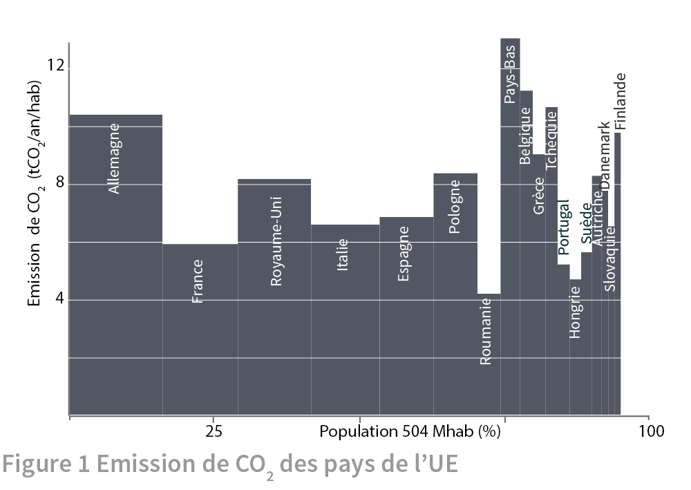
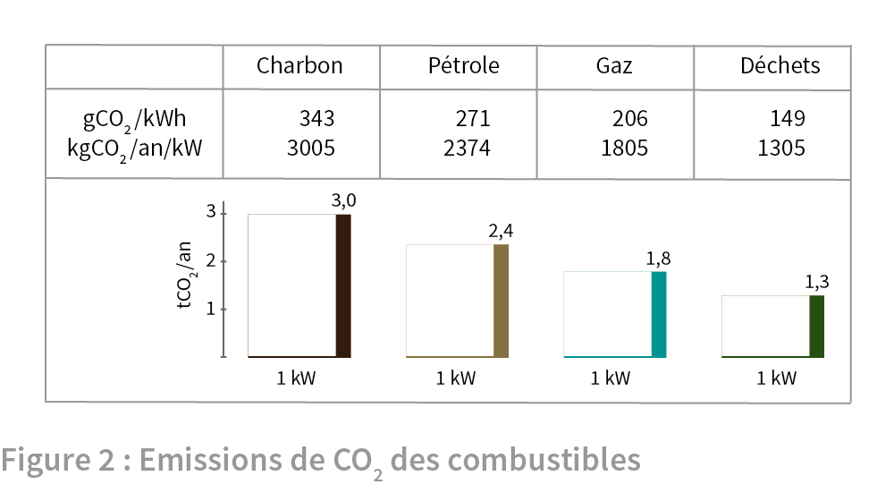
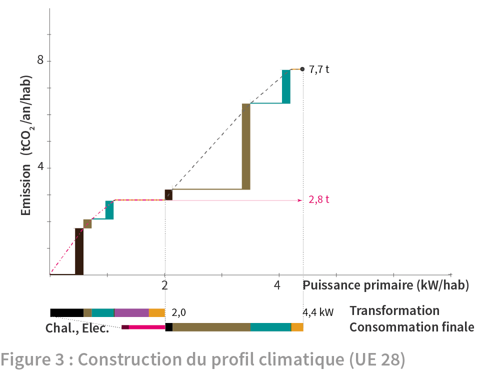
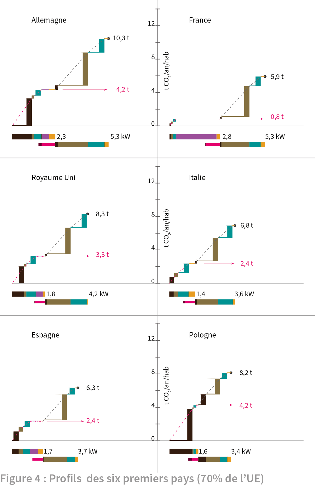
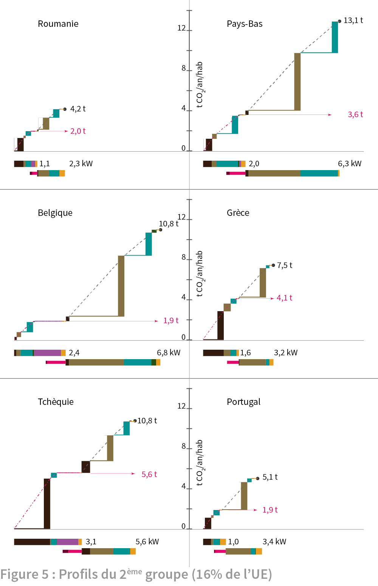
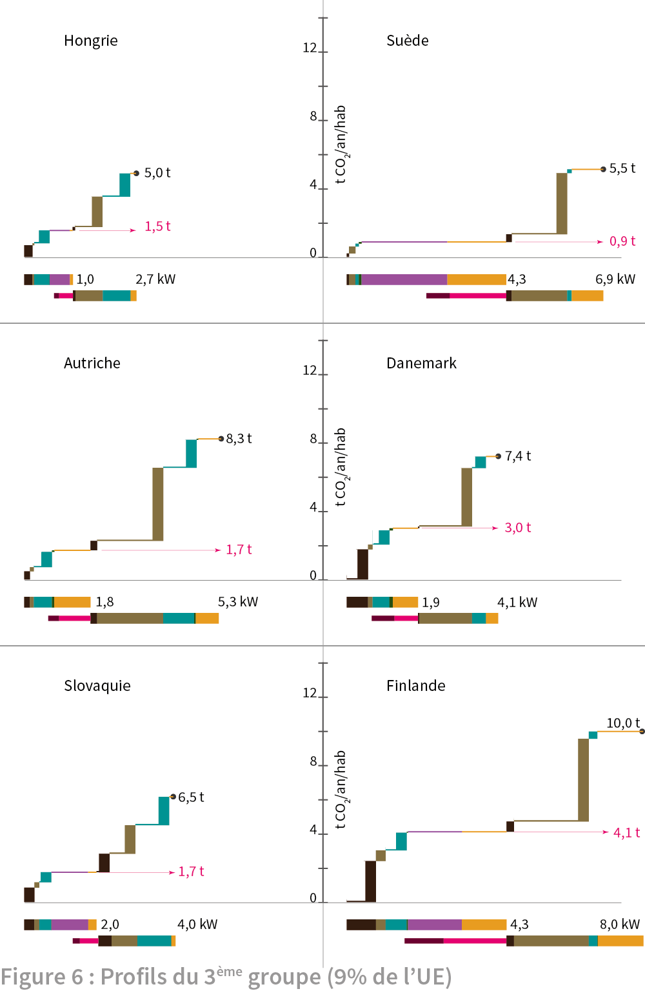

5. Environnement
Le rejet de gaz carbonique associé à notre consommation d’énergie est une cause reconnue du changement climatique. On présente ici le rejet de CO2 par habitant des 18 pays européens les plus peuplés. Les émissions dépendent des mix énergétiques des pays et des quantités qu’ils consomment. En remontant à l’origine des émissions de chacun de ces pays, certains faits, souvent omis, sont mis en évidence. De plus, cet examen aide à dégager les orientations pour limiter notre impact sur le réchauffement climatique.
Les rejets de gaz à effet de serre, causés par les activités humaines, jouent un rôle déterminant dans le changement climatique. La consommation d’énergie en est responsable pour les deux tiers 1. Aussi réduire ces rejets est devenu un des premiers enjeux des politiques énergétiques. Où se situe l’Union Européenne? L’« Européen moyen » émet près de huit tonnes par an et par habitant de gaz carbonique de par l’énergie qu’il consomme (7,9 tCO2/an/hab ). Cette émission est supérieure à celle du « Terrien moyen » ou du « Chinois moyen » (respectivement 4,5 et 5,9 tCO2/an/hab) mais inférieure à celles d’un Australien ou d’un Américain (respectivement 10,7 et 16,9 tCO2/an/hab) 2. L’Européen moyen apparaît ainsi occuper une position intermédiaire avec une moyenne de 7,9 tCO2/an/hab. Toutefois cette moyenne recouvre de profondes disparités entre les pays.

La figure 1 donne l’émission de CO2 par habitant en 2012 des pays de l’UE28 les plus peuplés 3. L’axe vertical mesure les débit de masse de CO2 émis dans l’atmosphère dans une année par habitant du pays. L’axe horizontal donne la population en pourcentage de la population de l’UE28 qui compte 504 millions d’habitants. Les pays sont classés par taille décroissante et ceux qui sont représentés ont une population supérieure à 5 millions d’habitants. Au nombre de 18, ils représentent 95% de la population de l’UE. Les émissions de CO2 par habitant varient du simple au triple, de 4,5 à 13 tCO2/an/hab, entre la Roumanie et les Pays-Bas. On a déjà montré sur un échantillon restreint de pays de l’UE que l’émission de CO2 peut varier différemment de la consommation d’énergie 4. L’examen des 18 plus grands pays de l’UE confirme le résultat et en donne l’explication.
Pour découvrir l’origine des différences entre consommation énergétique et émission de CO2, il faut entrer dans le détail des rejets des différentes « machines » énergétiques : centrales ou installations productrices d’électricité, voitures, chaudières, etc. Certaines ne rejettent pas de CO2 en fonctionnement 5. L’éolien, le solaire, l’hydraulique et la géothermie utilisent des flux environnementaux sans émission de CO2. De même la fission de l’uranium dans les centrales nucléaires ne dégage pas de CO2. Quant à la biomasse, elle émet du CO2 mais fonctionne suivant un cycle qui le récupère. Par contre, les matières fossiles (charbon et hydrocarbures) et les déchets émettent du CO2 lors de leur combustion. La figure 2 reprend les valeurs données par l’ADEME pour ces émissions 6.

La première ligne du tableau donne le nombre de grammes de CO2 émis lors d’une combustion dégageant un kilowattheure de chaleur. La deuxième ligne donne le nombre de tonnes de CO2 émises par une puissance moyenne d’un kilowatt sur une année (qui produit 8760 kWh d’énergie dans une année de 8760 heures). Ce résultat est représenté visuellement par un « L inversé » : la hauteur de la barre verticale épaisse mesure le rejet de CO2 en tonnes par an pour une puissance d’un kilowatt représentée par la base horizontale. Le charbon est le plus gros émetteur. La valeur donnée est une valeur moyenne de charbons qui émettent plus ou moins suivant leur qualité, le lignite émettant plus que l’anthracite. Ensuite viennent le pétrole, le gaz et les déchets. Il faut noter que la valeur du gaz correspond à sa seule combustion et ne tient pas compte des fuites de méthane qui peuvent intervenir lors du captage, de la distribution ou de la consommation. Ces fuites peuvent dégrader notablement la performance du gaz car le méthane est un gaz bien plus influent sur l’effet de serre que le CO2.
Les rejets de CO2 par habitant (figure 1) peuvent être retrouvés à partir de ces valeurs d’émission des combustibles et de la connaissance des « profils énergétiques » des pays européens 7. De plus, cette analyse relie les émissions de CO2 aux sources d’énergie mises en œuvre dans les pays membres et aboutit aux « profils carbone » des pays. La construction du « profil carbone » est expliquée dans la figure 3, à partir des données de l’«Européen moyen » (habitant de l’UE 28). Le graphique est une représentation dans le plan orienté par deux axes. L’axe vertical mesure le débit d’émission de CO2 mesuré en tonnes par an et par habitant. La cause, la puissance primaire consommée, est donnée par l’axe horizontal gradué en kilowatt par habitant. Le « profil énergétique » donne l’ordre de succession des sources d’énergie primaire qui alimentent la puissance primaire consommée. Rappelé sous l’axe horizontal, il comporte deux barres horizontales décalées verticalement. La barre supérieure est la puissance primaire entrant dans les transformations. La barre inférieure est la puissance primaire alimentant directement la consommation finale. La consommation finale comporte également une barre plus fine représentant l'électricité et la chaleur issues des transformations.

Dans le graphique les rejets de CO2 se cumulent à mesure que s’ajoutent les sources d’énergie apparaissant dans l’ordre du profil énergétique, d'abord avec les transformations qui produisent l’électricité et dans une moindre mesure de chaleur. La première source est le charbon. Le « L inversé » représentatif de l’émission du charbon (issu de la figure 2) est placé à l’origine du repère et il est réduit proportionnellement jusqu’à ce que sa base égale la puissance consommée. La hauteur de la barre verticale indique alors le débit de CO2 émis. Le pétrole vient ensuite et part du point atteint précédemment par le charbon en puissance primaire et débit de CO2. Comme précédemment, le L inversé représentatif du pétrole (figure 2) est réduit en proportion pour que sa base égale la puissance consommée. Sa hauteur donne le rejet de CO2 résultant. Ensuite viennent le gaz et les déchets dont la contribution est petite au point d'être invisible sur le graphique.
La courbe du CO2 en fonction de la puissance est donnée par la courbe à tirets de couleur rouge. Elle croit par segments linéaires dont les pentes varient suivant les combustibles, diminuant du charbon aux déchets. Le nucléaire et les renouvelable qui complètent l'apport de puissance primaire à la transformation n’émettent pas de CO2 et la courbe devient horizontale et forme un plateau. En tout, la transformation consomme une puissance primaire de 2,0 kW et émet 2,8 t CO2/an/hab.
Avec la consommation finale, la courbe du CO2 croit à nouveau avec la puissance primaire. Le charbon placé en premier est peu consommé. Le pétrole qui suit est abondamment utilisé pour les transports. Le gaz arrive ensuite, principalement pour le chauffage des locaux. Ici encore la part de combustion des déchets, très faible, passe inaperçue dans la courbe 8. Ensuite les énergies renouvelables (chauffage bois, solaire thermique, etc.) utilisées dans la consommation finale forment un nouveau plateau de faible étendue.
Au final, tout la puissance primaire a été comptée et elle vaut 4,4 kW par Européen moyen. Le débit du rejet de CO2 qui en résulte s’élève à 7,7 tCO2/an/hab.
Les profils carbone des pays qui composent l’UE28 diffèrent assez fortement entre eux et avec celui de l’ « Européen moyen ». C'est ce qui est montré par les trois figures suivantes présentant les « profils carbone » par habitant des 18 pays les plus peuplés. La figure 4 présente les six plus grands pays qui regroupent 70% de la population européenne. Premier constat tiré de la vue d’ensemble : alors que les consommations individuelles décroissent dans l’ordre d'apparition des pays, l’émission de CO2 varie différemment. La composition du profil énergétique a un rôle au moins aussi important dans l'émission de CO2.

Le profil d’émission de CO2 de chaque pays comporte deux parties. La première correspond à l’énergie primaire utilisée dans les transformations (production électrique principalement), la deuxième à l’énergie primaire de la consommation finale. Deux niveaux de CO2 sont indiqués, un premier au terme de la partie de transformation et le deuxième au final. On peut constater que la différence entre pays résulte principalement de la partie de transformation. Ainsi la France a le plus faible taux d’émission de CO2 par habitant des six pays alors qu’elle a la plus forte consommation, ex-aequo avec l’Allemagne. Dans sa partie transformation, la France présente un profil très plat ne dépassant pas 0,8 tCO2/an/hab, soit le tiers de l’Espagne ou de l’Italie (2,4) et le cinquième de l’Allemagne ou de la Pologne (4,2). La part importante du nucléaire y limite le recours aux fossiles pour la production électrique. De son côté, l’Allemagne produit l’électricité avec le charbon qui fait monter rapidement le niveau de CO2. Les renouvelables limitent pour une faible part cette montée, un peu moins que le nucléaire encore en service en Allemagne en 2012.
Les profils d’émission des pays se ressemblent plus dans la partie de la consommation finale. Le pétrole est le premier émetteur dans tous les pays, suivi du gaz. Les renouvelables (biomasse, solaire thermique, géothermie au niveau individuel) permettent la formation d’un plateau qui reste assez modeste dans tous les pays et est le plus marqué en Espagne, France et Allemagne.
Une autre illustration du faible rapport entre la puissance consommée et l’émission de CO2 est donnée par la Pologne. Bien qu’elle ait la plus faible consommation énergétique du groupe, elle arrive deuxième après l’Allemagne pour l’émission de CO2. C’est le résultat de l’usage quasi exclusif du charbon dans la production électrique polonaise. Par comparaison, l’Espagne, avec une consommation légèrement supérieure à la Pologne, divise presque par deux l’émission dans la partie transformation en recourant au nucléaire et aux renouvelables.
Dans le groupe des six pays suivants, présentés dans la figure 4, les pays ont des profils de deux types: d’un côté Pays-Bas, Belgique et Tchéquie et de l’autre Grèce, Portugal et Roumanie. Le record d’émission est atteint par les Pays-Bas avec 13,1 t/an/hab, (plus du double de la France et de l’Espagne) suivi de la Belgique et de la Tchéquie. A l’opposé, la plus basse émission est celle de la Roumanie avec 4,2 t/an/hab (les deux tiers de la France et de l’Espagne), précédant le Portugal et la Grèce.

L’examen plus détaillé des profils montre une grande similarité des profils des Pays-Bas et de la Belgique dans la partie consommation finale où domine comme toujours le pétrole. La différence la plus marquée se situe dans la partie transformation. Ici, la Belgique consomme pour sa production d’électricité beaucoup moins de fossiles que les Pays-Bas, car elle utilise le nucléaire qui donne un plateau étendu. Au final alors que le Belge moyen consomme un peu plus que le Hollandais moyen (6,8 contre 6,3 kW), il a un a impact climatique un peu moins élevé (10,5 contre 13,1 t/an/hab). La Tchéquie utilise moins d’énergie primaire par habitant, surtout en consommation finale (5,6 kW). Toutefois elle consacre une part importante à une production électrique qui se partage entre charbon émetteur et nucléaire qui stabilise l’émission. Elle a un profil voisin de celui de l’Allemagne.
Les trois autres pays ont des émissions de CO2 plus faibles, allant de 4,2 à 7,5 t/an/hab et des consommations énergétiques peu élevées, de 2,3 à 3,4 kW. Le Portugal qui a une consommation d’énergie un peu plus élevée que la Grèce parvient à une moindre émission de CO2 grâce à une part conséquente de renouvelables.
Le troisième et dernier groupe de pays présente encore des profils très contrastés. Les émissions de CO2 sont plutôt basses pour trois pays situés entre 5 à 6,5 t/an/hab et élevées pour trois entre 7,5 et 10.

On peut présenter les pays par paires montrant des profils comparables. Hongrie et Slovaquie présentent un profil avec un plateau marqué dû au nucléaire et aux renouvelables, pour une moindre part. Pour les consommations, pétrole et gaz dominent, avec en plus du charbon en Slovaquie. Il y a peu de renouvelables dans la consommation finale dans les deux cas.
L’Autriche et le Danemark sont deux pays qui se font fort de ne pas recourir au nucléaire et misent sur les renouvelables et la réduction de la consommation pour réduire leur émission de CO2, qui est actuellement égale ou supérieure à la moyenne européenne. La part des renouvelables y est suffisamment grande pour qu’on observe un plateau dans le profil des transformation et consommation finale. L’Autriche est un peu mieux lotie que le Danemark pour la production électrique grâce à l’hydraulique. Le Danemark mise sur l’éolien et règle le problème de l’intermittence de cette source grâce à des lignes électriques de grande puissance avec ses voisins, Norvège et Suède, pourvus en hydroélectricité. Il garde aussi une part significative du charbon.
Suède et Finlande atteignent, avec 4,3 kW, la puissance la plus importante consacrée à la transformation. Les énergies fossiles en sont quasiment absentes en Suède. Dans les deux pays, la production est assurée par le nucléaire et les renouvelables à égalité. Dans le cas de la Suède, le plateau est étendu et très bas et son profil ressemble à celui de la France. La part de renouvelables est également importante dans la consommation finale des deux pays. L’émission de CO2 par habitant de la Suède est la moitié de la Finlande pour une consommation seulement 15% plus faible. En effet alors que la Suède a quasiment éliminé les énergies fossiles de sa production d’électricité, la Finlande a encore recours au charbon. Toutefois, la Finlande, de loin le pays le plus énergivore des 18 pays, n’arrive qu’en 5ème position derrière les Pays-Bas, plus fort émetteur, la Belgique, la Tchéquie et l’Allemagne.
Les profils peuvent bien sûr susciter d’autres comparaisons et commentaires qui sont laissés à l’initiative du lecteur. Un dernier mot sur le fait que les valeurs globales pour les pays donnent une moyenne par habitant. Seul résultat accessible avec les données dont on dispose, la moyenne peut recouvrir des disparités importantes entre habitants d’un même pays. La précarité énergétique, notion introduite au début du siècle par le gouvernement du Royaume Uni (fuel poverty) le rappelle. Pendant que certains se rationnent en énergie par manque d'argent, d’autres peuvent dépenser sans compter et émettre du CO2 en conséquence. Il n’en reste pas moins que les gouvernements des pays, et l’Union Européenne, ont, par leurs politiques, des responsabilités fortes dans la conduite vers des mix énergétiques et des comportements qui soient moins émetteurs de gaz carbonique. Souhaitons que les profils carbone présentés ici participent aux connaissances utiles à l’information du public et à l’orientation de ces politiques. ◊
GIEC ipcc-w3 summary for policymakers. ↑
CEA Mémento de l’énergie édition 2014 ↑
European Union, EU energy in figures, statistical pocketbook 2014. ↑
Qui brûle du CO2 ? ce site. ↑
Dans tous les cas du CO2 a pu être émis lors de la construction des « machines » (par exemple bâtiments et structures en béton ou acier, combustible nucléaire, panneaux photovoltaïques, voitures, etc.) mais, dans la plupart des cas, cette part est très faible devant les rejets en fonctionnement et nous la négligerons. ↑
A. Chêne-Pezot, Facteurs d’émission de dioxyde de carbone pour les combustibles, ADEME Avril 2005. ↑
Consommation d'énergie dans les pays européens, ce site. ↑
Le lecteur s’interrogera peut-être sur l’intérêt de distinguer l’usage énergétique des déchets qui est très faible devant les autres sources d’énergie. Nous avons fait ce choix pour rester conforme aux données d’Eurostat. ↑